Advanced HRF Modeling and Design
Bradley R. Buchsbaum
2026-10-02
Source:vignettes/a_04_advanced_modeling.Rmd
a_04_advanced_modeling.RmdIntroduction
This vignette explores advanced features of fmrihrf for
systematic HRF modeling, regularization, and experimental design. We’ll
cover four key functions that extend the basic HRF framework:
-
hrf_library(): Creating systematic collections of HRF variants -
reconstruction_matrix(): Converting basis coefficients back to HRF shapes -
regressor_set(): Managing multi-condition experimental designs -
regressor_design(): Building design matrices for complex experimental blocks
These tools are essential for advanced fMRI modeling where you need flexibility in HRF specification, robust estimation with limited data, or complex experimental designs.
HRF Libraries: Systematic Parameter Exploration
The hrf_library() function creates collections of HRF
variants by systematically varying parameters. This is useful for
exploring how different HRF assumptions affect your model or for
building data-driven HRF basis sets.
Example 1: Library of Gamma HRFs
Let’s create a library of gamma HRFs with different shape and rate parameters:
# Define parameter grid for gamma HRFs
gamma_params <- expand.grid(
shape = c(4, 6, 8),
rate = c(0.8, 1.0, 1.2)
)
print(gamma_params)
#> shape rate
#> 1 4 0.8
#> 2 6 0.8
#> 3 8 0.8
#> 4 4 1.0
#> 5 6 1.0
#> 6 8 1.0
#> 7 4 1.2
#> 8 6 1.2
#> 9 8 1.2
# Create a generator function for gamma HRFs
make_gamma_hrf <- function(shape, rate) {
gen_hrf(hrf_gamma, shape = shape, rate = rate, name = paste0("Gamma_", shape, "_", rate))
}
# Create HRF library
gamma_lib <- hrf_library(make_gamma_hrf, gamma_params)
print(gamma_lib)
#> -- HRF: Gamma_4_0.8 + Gamma_6_0.8 + Gamma_8_0.8 + Gamma_4_1 + Gamma_6_1 + Gamma_8_1 + Gamma_4_1.2 + Gamma_6_1.2 + Gamma_8_1.2 -
#> Basis functions: 9
#> Span: 24 s
nbasis(gamma_lib) # 9 HRFs total (3 x 3 grid)
#> [1] 9
# Evaluate and visualize
time_points <- seq(0, 20, by = 0.1)
gamma_responses <- gamma_lib(time_points)
# Convert to long format for plotting
gamma_df <- as.data.frame(gamma_responses)
names(gamma_df) <- with(gamma_params, paste(shape, rate, sep = " / "))
gamma_df$Time <- time_points
gamma_long <- pivot_longer(gamma_df, -Time, names_to = "Parameters", values_to = "Response")
gamma_long <- gamma_long %>%
separate(Parameters, into = c("Shape", "Rate"), sep = " / ", remove = FALSE) %>%
mutate(Shape = factor(Shape, levels = c("4", "6", "8")),
Rate = factor(Rate, levels = c("0.8", "1", "1.2")))
# One panel per shape; rate (an ordered parameter) uses the ordered palette
ggplot(gamma_long, aes(x = Time, y = Response, color = Rate)) +
geom_hline(yintercept = 0, colour = "grey70", linewidth = 0.3) +
geom_line(linewidth = 0.9) +
facet_wrap(~Shape, ncol = 1, labeller = label_both) +
scale_colour_hrf("ordered") +
scale_y_continuous(breaks = c(0, 0.2)) +
labs(title = "Gamma HRF library", subtitle = "Peak time = (shape - 1) / rate",
x = "Time (s)", y = "Response", color = "Rate") +
theme(legend.position = "bottom", legend.justification = "left",
strip.text = element_text(hjust = 0), plot.title.position = "plot")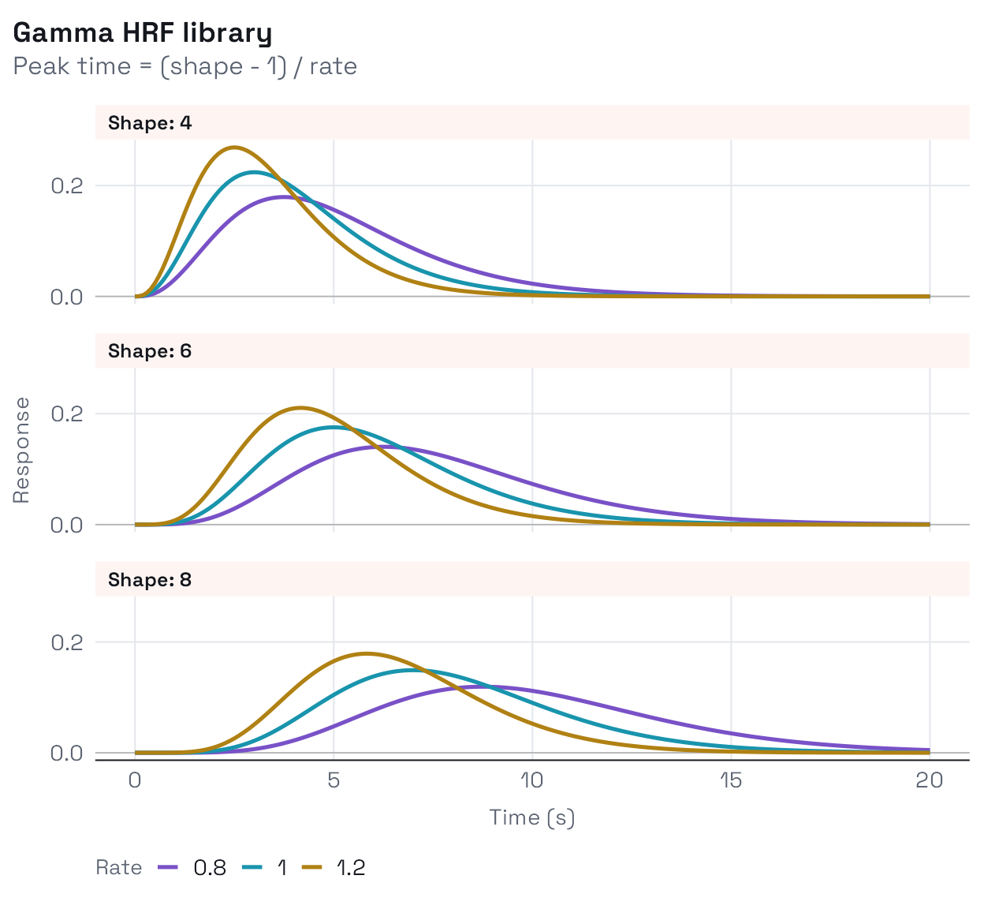
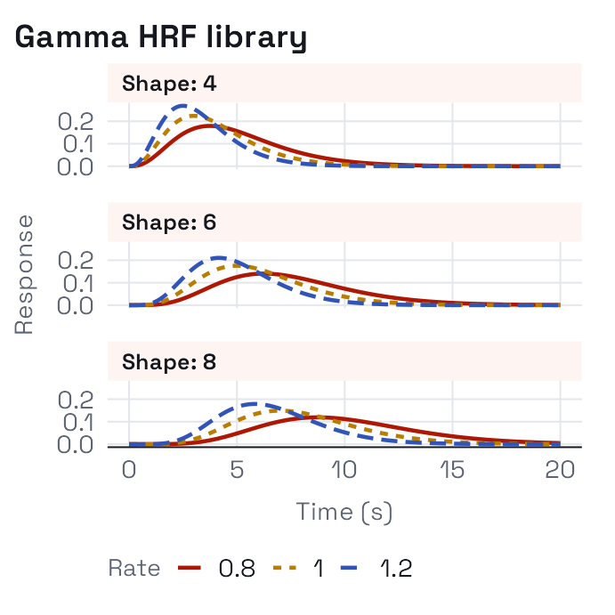
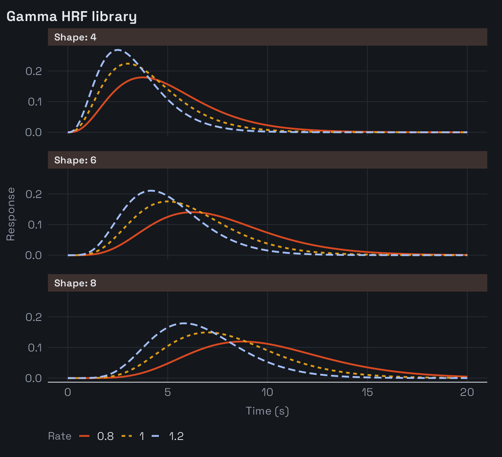
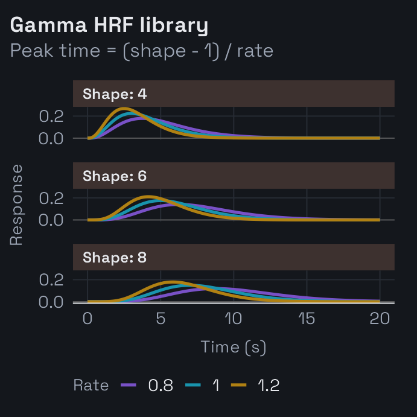
Example 2: Library of Lagged SPM HRFs
Here’s how to create a library of the SPM canonical HRF with different temporal lags:
# Parameter grid for temporal lags
lag_params <- data.frame(lag = seq(-2, 4, by = 1))
print(lag_params)
#> lag
#> 1 -2
#> 2 -1
#> 3 0
#> 4 1
#> 5 2
#> 6 3
#> 7 4
# Create library using a helper function that applies lag_hrf
create_lagged_spm <- function(lag) {
lag_hrf(HRF_SPMG1, lag = lag)
}
spm_lag_lib <- hrf_library(create_lagged_spm, lag_params)
print(spm_lag_lib)
#> -- HRF: SPMG1_lag(-2) + SPMG1_lag(-1) + SPMG1_lag(0) + SPMG1_lag(1) + SPMG1_lag(2) + SPMG1_lag(3) + SPMG1_lag(4) -
#> Basis functions: 7
#> Span: 28 s
# The library is a basis set: one column per lag
plot_hrfs(spm_lag_lib, time = time_points,
labels = sprintf("%+d s", lag_params$lag), palette = "ordered",
title = "Library of lagged SPM canonical HRFs",
subtitle = "Lags from -2 to +4 s")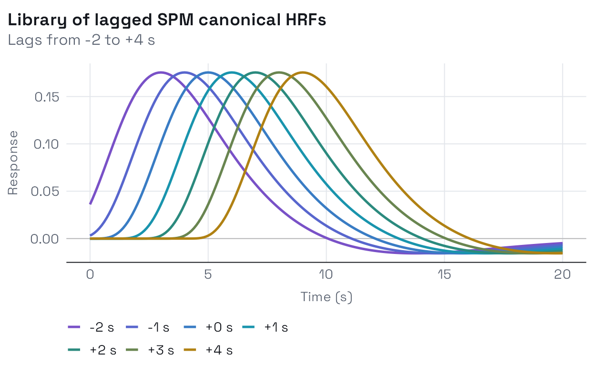
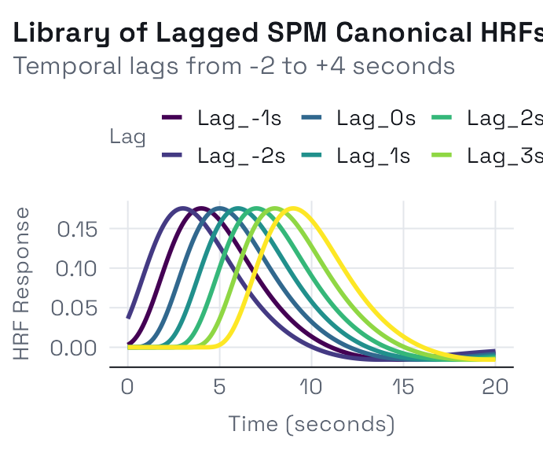
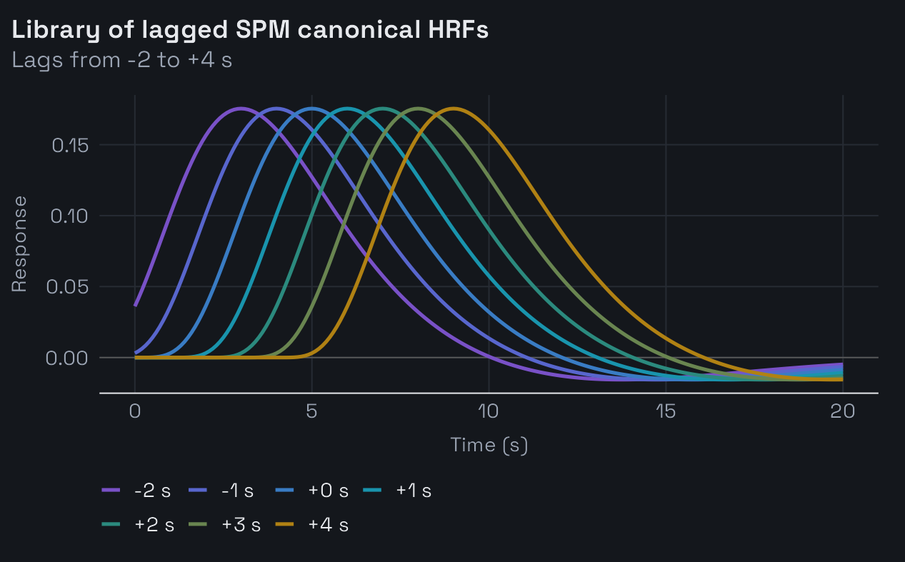
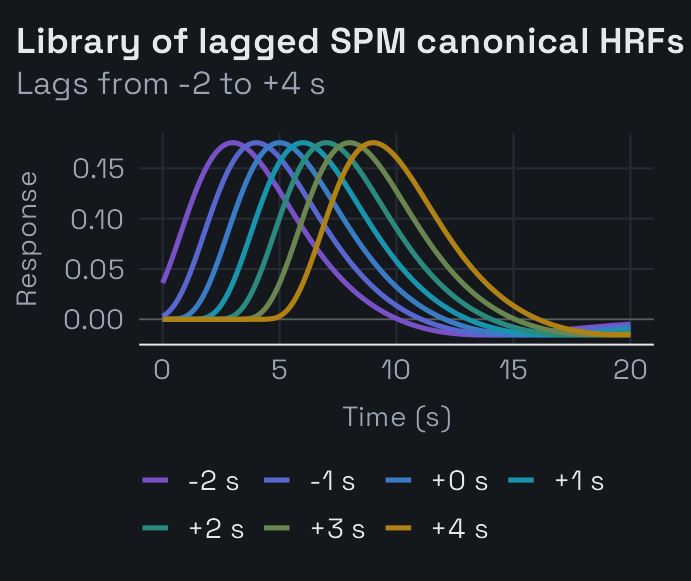
Reconstruction Matrices: From Coefficients to HRF Shapes
The reconstruction process converts a set of basis coefficients into a continuous HRF shape. Understanding this transformation is key to interpreting estimated HRFs from fMRI analyses.
How Reconstruction Works
A flexible basis set describes an HRF by a vector of weights, one per basis function. The reconstruction matrix holds the basis functions evaluated on a time grid (one column per function), so multiplying it by the weights gives the HRF on that grid.
# Ten cubic B-splines with 24-second support
basis_set <- hrf_bspline_generator(nbasis = 10, span = 24)
eval_times <- seq(0, 24, by = 0.1)
# The reconstruction matrix: each column is a basis function evaluated at time points
recon_matrix <- reconstruction_matrix(basis_set, eval_times)
dim(recon_matrix)
#> [1] 241 10Every function is zero at 0 s and at 24 s, so any weighted sum starts and ends at baseline.
plot_hrfs(basis_set, time = eval_times,
title = "Cubic B-spline basis, N = 10",
subtitle = "24 s span; each function covers part of it")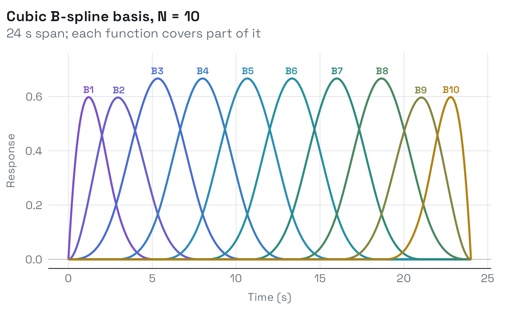
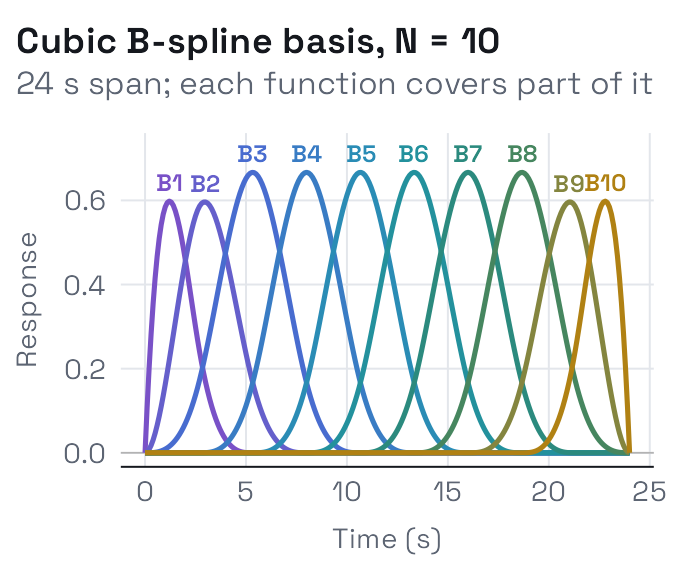
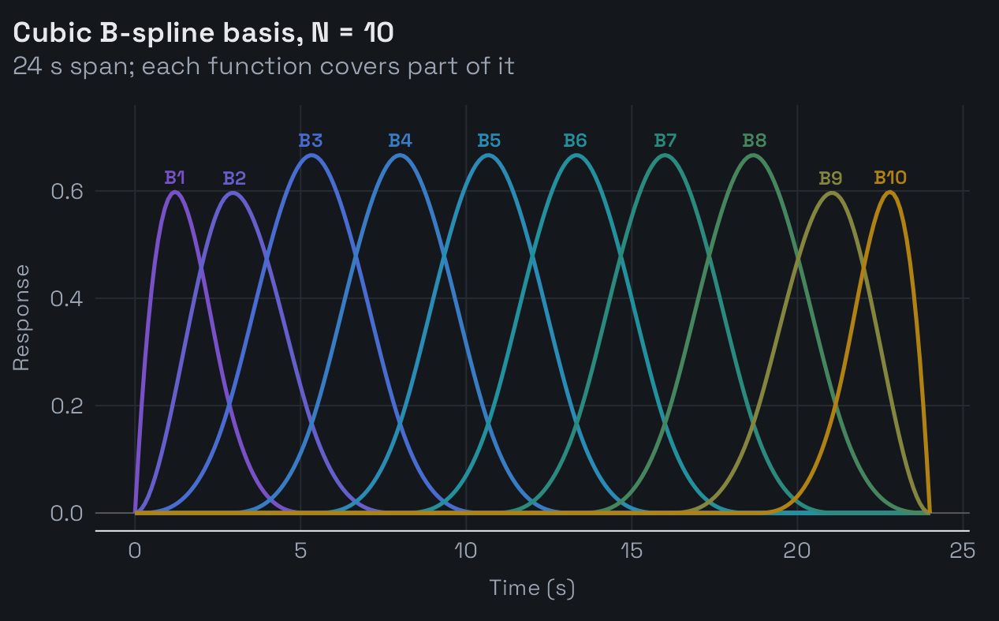
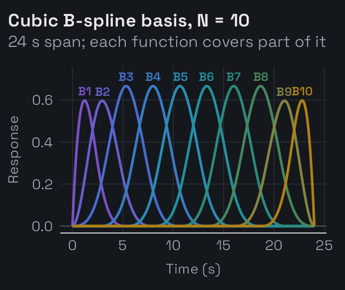
In an analysis the weights come from the GLM. Here we obtain them by least-squares fits of three target responses: the SPM canonical HRF, the same response delayed by 3 s, and the response to a sustained 6-second event. The basis is the same each time; only the weights change.
targets <- list(
"Canonical" = HRF_SPMG1,
"Delayed" = lag_hrf(HRF_SPMG1, 3), # canonical, 3 s later
"Sustained" = block_hrf(HRF_SPMG1, width = 6, normalize = TRUE) # 6 s event
)
fits <- lapply(targets, function(h) {
y <- h(eval_times)
y <- y / max(y) # unit peak
w <- qr.solve(recon_matrix, y) # least-squares weights
list(weights = w, fitted = drop(recon_matrix %*% w), target = y)
})
# Fit quality (R^2) for each target
sapply(fits, function(f) {
1 - sum((f$target - f$fitted)^2) / sum((f$target - mean(f$target))^2)
})
#> Canonical Delayed Sustained
#> 0.9980561 0.9964472 0.9996352
canonical_coefs <- fits[["Canonical"]]$weights
round(canonical_coefs, 2)
#> [1] -0.18 0.52 1.26 0.41 0.09 -0.09 -0.09 -0.07 -0.02 -0.03Building an HRF from Weighted Basis Functions
Each panel shows the weighted basis functions (thin grey lines), their sum, the reconstructed HRF (thick coloured line), and the target it was fitted to (dashed). The canonical response is carried mainly by B3, with help from B2 and B4; its undershoot comes from the small negative weights on B6–B8. The fits are not perfect: the small dip in the first second of the canonical fit, and the wiggle before the delayed rise, are fitting errors, not modelled features. Because every basis function is zero at 24 s, the fits also return to zero there even where a target is still slightly below baseline (most visibly the sustained response’s undershoot).
component_df <- do.call(rbind, lapply(names(fits), function(nm) {
w <- fits[[nm]]$weights
data.frame(
Time = rep(eval_times, length(w)),
Value = as.vector(sweep(recon_matrix, 2, w, `*`)),
Basis = factor(rep(paste0("B", seq_along(w)), each = length(eval_times)),
levels = paste0("B", seq_along(w))),
Target = nm
)
}))
sum_df <- do.call(rbind, lapply(names(fits), function(nm) {
data.frame(Time = eval_times, Value = fits[[nm]]$fitted,
Target_value = fits[[nm]]$target, Target = nm)
}))
component_df$Target <- factor(component_df$Target, levels = names(fits))
sum_df$Target <- factor(sum_df$Target, levels = names(fits))
ggplot(component_df, aes(Time, Value)) +
geom_hline(yintercept = 0, colour = "grey70", linewidth = 0.3) +
geom_line(aes(group = Basis), colour = "grey60", linewidth = 0.4) +
geom_line(data = sum_df, aes(colour = Target), linewidth = 1.1) +
geom_line(data = sum_df, aes(y = Target_value), colour = "grey15",
linewidth = 0.5, linetype = "22") +
facet_wrap(~Target, nrow = 1) +
scale_colour_hrf() +
scale_x_continuous(breaks = c(0, 10, 20)) +
scale_y_continuous(breaks = c(0, 0.5, 1)) +
labs(title = "Same basis, different weights",
subtitle = "Grey: weighted basis functions\nColour: their sum. Dashed: target",
x = "Time (s)", y = "Response / peak") +
theme(legend.position = "none", strip.text = element_text(hjust = 0),
plot.title.position = "plot")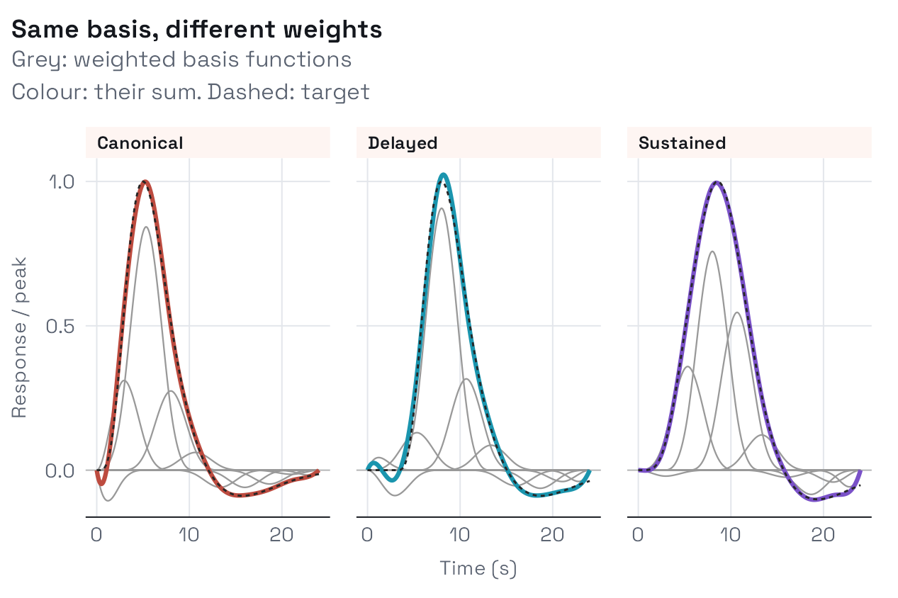
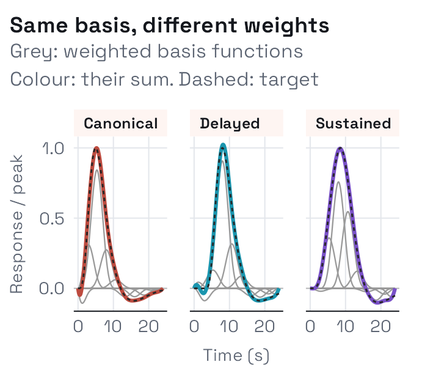
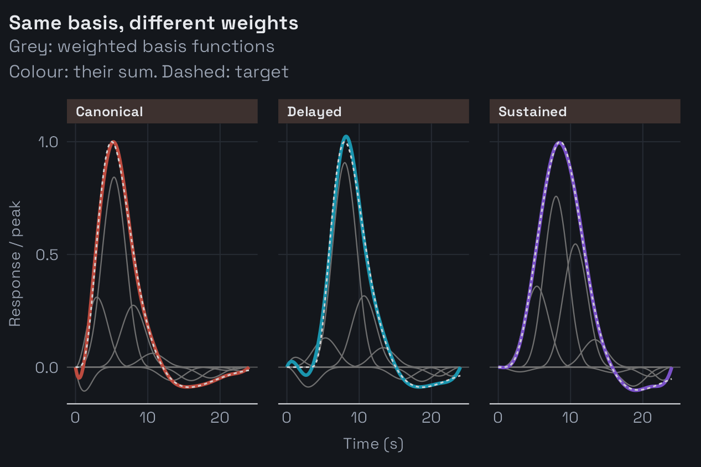
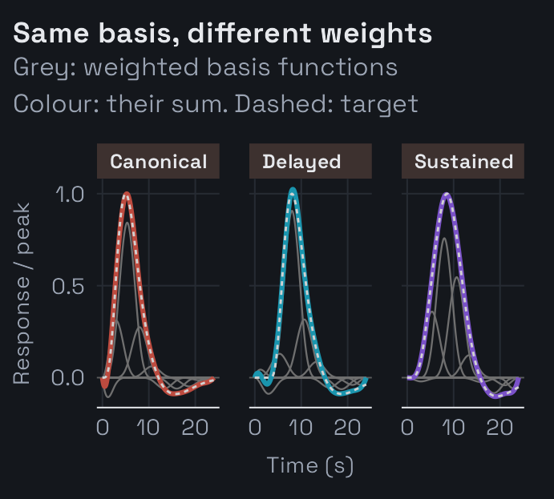
The weights themselves summarize the shape. For the delayed response the largest weight moves from B3 to B4 (and B2 turns slightly negative to delay the rise); a sustained event spreads it over B3 to B5:
coef_df <- do.call(rbind, lapply(names(fits), function(nm) {
w <- fits[[nm]]$weights
data.frame(Basis = factor(paste0("B", seq_along(w)), levels = paste0("B", seq_along(w))),
Weight = w, Target = nm)
}))
coef_df$Target <- factor(coef_df$Target, levels = names(fits))
coef_df$Index <- as.integer(coef_df$Basis)
ggplot(coef_df, aes(Index, Weight, colour = Target)) +
geom_hline(yintercept = 0, colour = "grey70", linewidth = 0.3) +
geom_segment(aes(xend = Index, y = 0, yend = Weight), linewidth = 0.9) +
geom_point(size = 2.2) +
facet_wrap(~Target, ncol = 1) +
scale_colour_hrf() +
scale_x_continuous(breaks = 1:10, minor_breaks = NULL) +
scale_y_continuous(breaks = c(0, 1)) +
labs(title = "Basis weights for each target", x = "Basis function (B1-B10)",
y = "Weight") +
theme(legend.position = "none", strip.text = element_text(hjust = 0),
plot.title.position = "plot")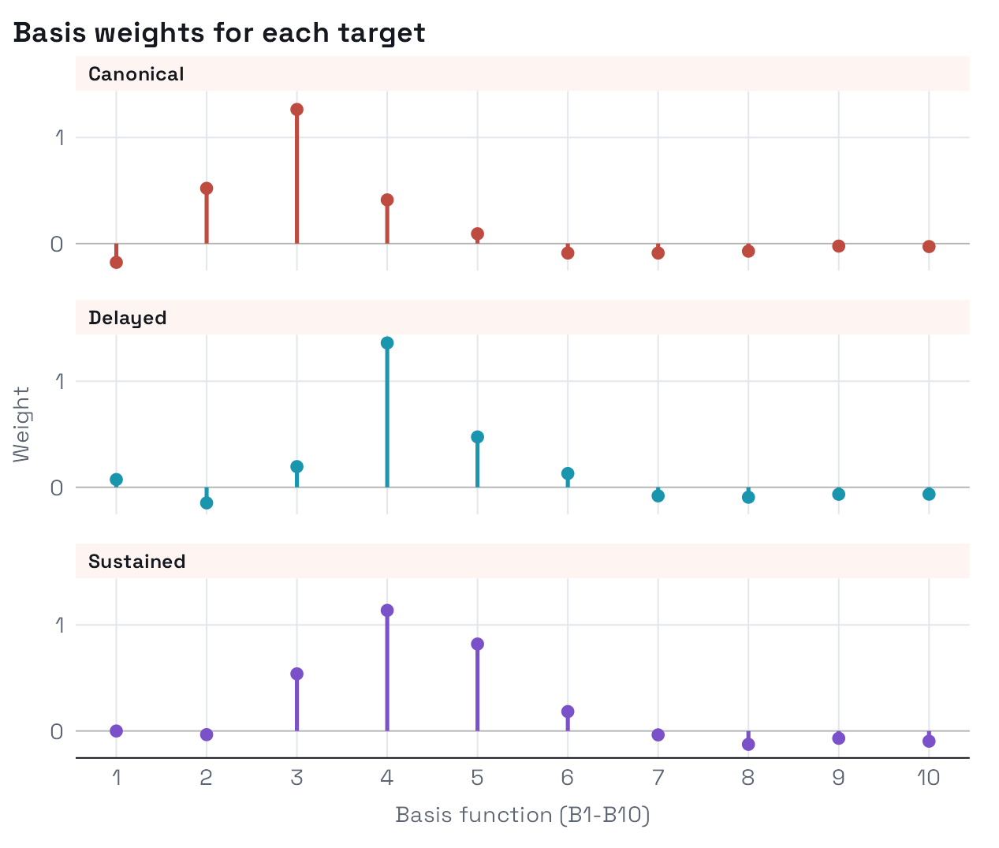
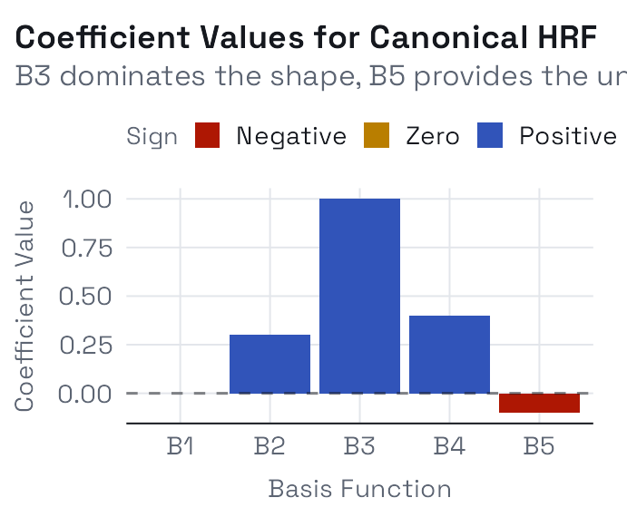
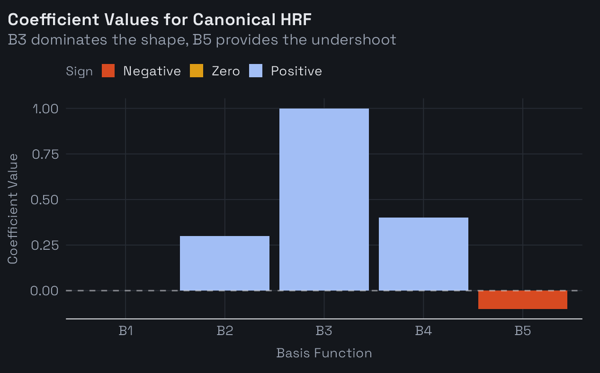
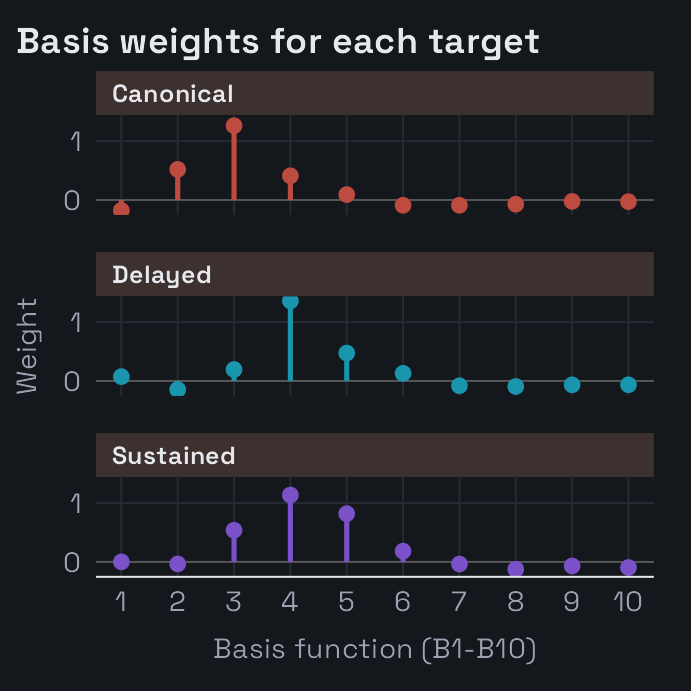
Regressor Sets: Multi-Condition Experimental Designs
The regressor_set() function simplifies creating
regressors for multi-condition experiments where each condition shares
the same HRF but has different event timings.
# Simulate a 3-condition experiment
set.seed(123)
n_events_per_condition <- 8
total_duration <- 240 # 4 minutes
# Generate random onsets for each condition
condition_A_onsets <- sort(runif(n_events_per_condition, 0, total_duration))
condition_B_onsets <- sort(runif(n_events_per_condition, 0, total_duration))
condition_C_onsets <- sort(runif(n_events_per_condition, 0, total_duration))
# Combine all onsets and create factor
all_onsets <- c(condition_A_onsets, condition_B_onsets, condition_C_onsets)
conditions <- factor(rep(c("TaskA", "TaskB", "TaskC"), each = n_events_per_condition))
# Create regressor set
reg_set <- regressor_set(onsets = all_onsets, fac = conditions, hrf = HRF_SPMG1)
print(reg_set)
#> $regs
#> $regs[[1]]
#>
#> $regs[[2]]
#>
#> $regs[[3]]
#>
#>
#> $levels
#> [1] "TaskA" "TaskB" "TaskC"
#>
#> attr(,"class")
#> [1] "RegSet" "list"
# Evaluate at scan times (TR = 2s)
TR <- 2
scan_times <- seq(0, total_duration, by = TR)
design_matrix <- evaluate(reg_set, scan_times)
print(dim(design_matrix)) # Time points x 3 conditions
#> [1] 121 3plot_regressors() accepts a regressor set directly. With
layout = "stack", each condition gets its own panel and its
own events are marked below its curve. scales = "fixed"
puts all panels on one y axis, so response sizes can be compared across
conditions:
plot_regressors(reg_set, grid = seq(0, total_duration, by = 0.1),
layout = "stack", scales = "fixed",
title = "Multi-condition design",
subtitle = "8 random onsets per condition")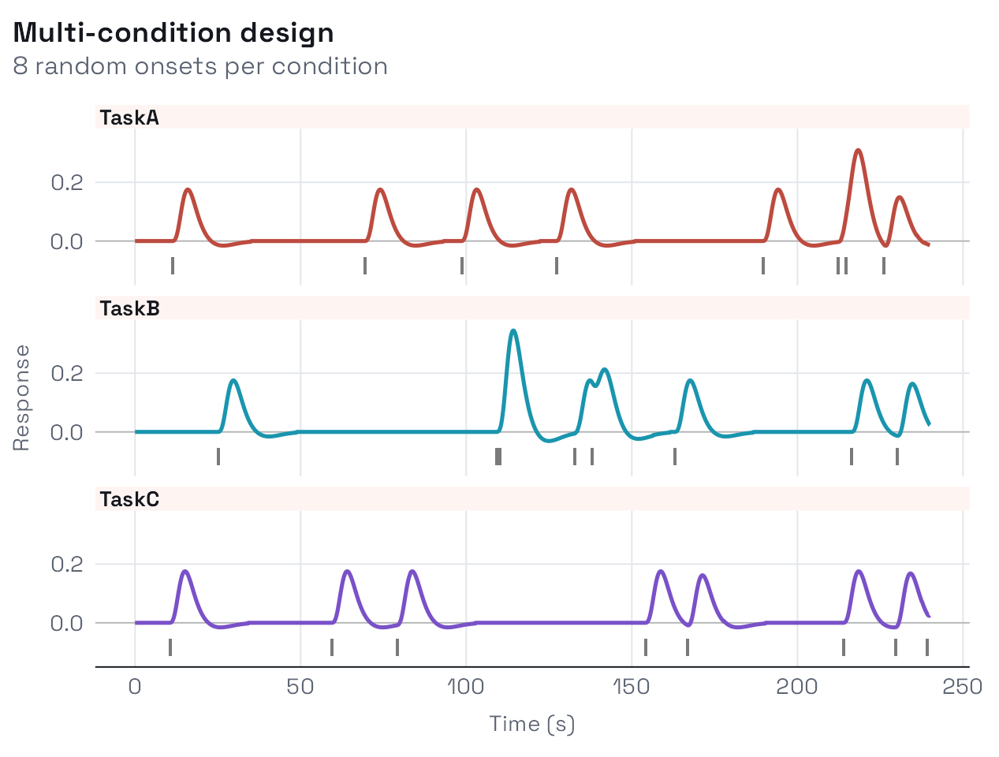
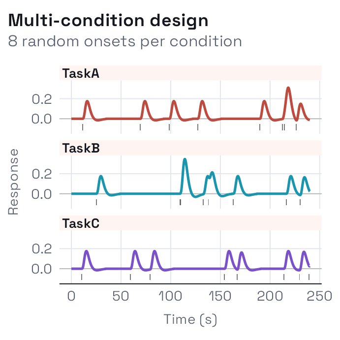
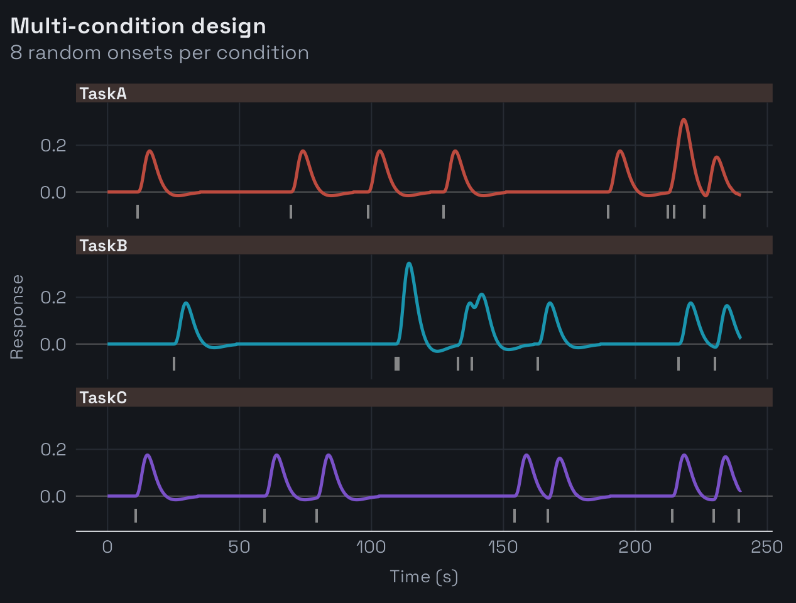
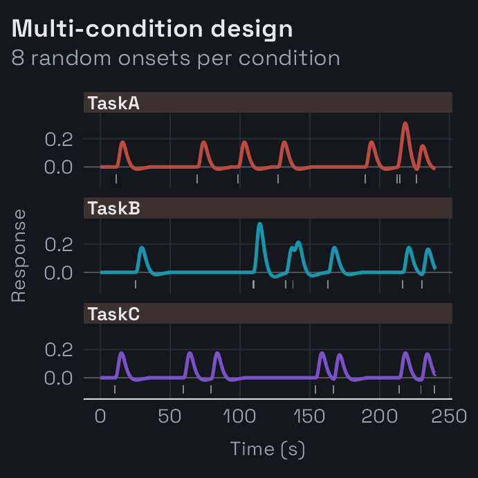
Regressor Design: Complex Block Designs
For more complex experimental designs with multiple blocks or runs,
regressor_design() provides a higher-level interface that
handles block-relative timing and creates design matrices directly.
# Create a sampling frame for 2 blocks of 120 scans (240 s) each
sframe <- sampling_frame(
blocklens = c(120, 120), # Two 4-minute blocks (120 scans each at TR = 2s)
TR = 2 # 2-second TR
)
print(sframe)
#> Sampling Frame
#> ==============
#>
#> Structure:
#> 2 blocks
#> Total scans: 240
#>
#> Timing:
#> TR: 2 s
#> Precision: 0.1 s
#>
#> Duration:
#> Total time: 480.0 s
# Generate block-relative event onsets
# Block 1: Faces at 10, 50, 90; Houses at 30, 70 seconds
# Block 2: Faces at 15, 55, 95; Houses at 35, 75 seconds
block_onsets <- c(10, 30, 50, 70, 90, 15, 35, 55, 75, 95)
block_ids <- c(rep(1, 5), rep(2, 5))
event_conditions <- factor(c("Faces", "Houses", "Faces", "Houses", "Faces",
"Faces", "Houses", "Faces", "Houses", "Faces"))
# Create design matrix using regressor_design
design_mat <- regressor_design(
onsets = block_onsets,
fac = event_conditions,
block = block_ids,
sframe = sframe,
hrf = HRF_SPMG1
)
print(dim(design_mat)) # Total time points across both blocks x 2 conditions
#> [1] 240 2
# The same design on a 0.1 s grid shows the continuous responses; the design
# matrix itself is those responses sampled once per scan (TR = 2 s).
sframe_fine <- sampling_frame(blocklens = c(2400, 2400), TR = 0.1, precision = 0.05)
design_fine <- regressor_design(onsets = block_onsets, fac = event_conditions,
block = block_ids, sframe = sframe_fine, hrf = HRF_SPMG1)
fine_df <- data.frame(Time = rep(samples(sframe_fine, global = TRUE), 2),
Response = as.vector(design_fine),
Condition = rep(c("Faces", "Houses"), each = nrow(design_fine)))
scan_df <- data.frame(Time = rep(samples(sframe, global = TRUE), 2),
Response = as.vector(design_mat),
Condition = rep(c("Faces", "Houses"), each = nrow(design_mat)))
scan_df <- scan_df[abs(scan_df$Response) > 0.01, ] # samples during responses
# Highest scan sample in each block, labelled on the Faces panel
peak_df <- do.call(rbind, lapply(split(scan_df[scan_df$Condition == "Faces", ],
scan_df$Time[scan_df$Condition == "Faces"] > 240),
function(d) d[which.max(d$Response), ]))
ggplot(fine_df, aes(Time, Response, colour = Condition)) +
geom_hline(yintercept = 0, colour = "grey70", linewidth = 0.3) +
geom_vline(xintercept = 240, colour = "grey45", linetype = "dashed") +
geom_line(linewidth = 0.7) +
geom_point(data = scan_df, size = 0.9) +
geom_text(data = peak_df, aes(label = sprintf("max %.3f", Response)),
hjust = -0.15, vjust = -0.4, size = 3, show.legend = FALSE) +
facet_wrap(~Condition, ncol = 1) +
scale_colour_hrf() +
scale_y_continuous(breaks = c(0, 0.15), expand = expansion(mult = c(0.05, 0.35))) +
labs(title = "Two-block design",
subtitle = "Points: scan samples (TR = 2 s)\nDashed line: start of block 2",
x = "Time (s)", y = "Predicted BOLD response") +
theme(legend.position = "none", strip.text = element_text(hjust = 0),
plot.title.position = "plot")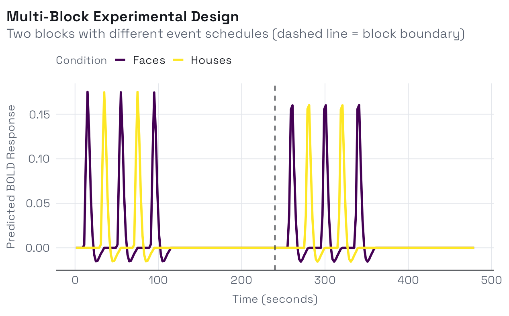
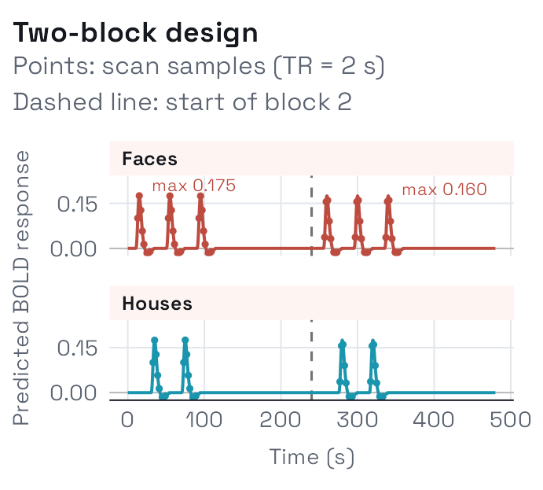
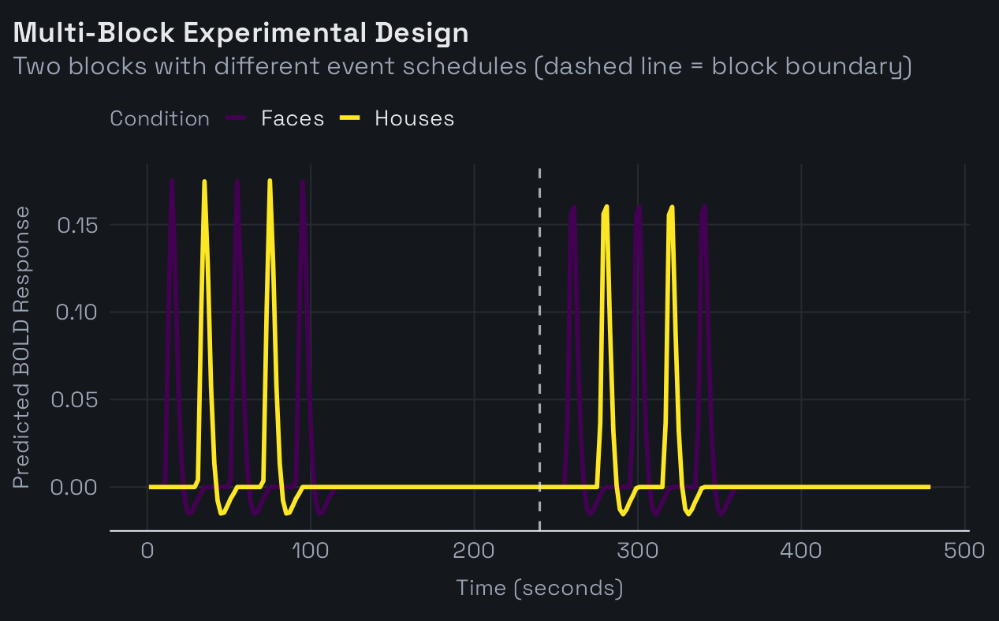
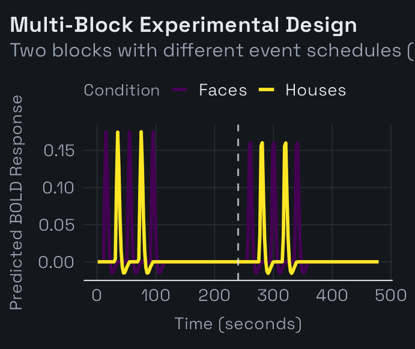
# Show global vs block-relative timing
timing_df <- data.frame(
Block = block_ids,
Block_Relative_Onset = block_onsets,
Global_Onset = global_onsets(sframe, block_onsets, block_ids),
Condition = event_conditions
)
print(timing_df)
#> Block Block_Relative_Onset Global_Onset Condition
#> 1 1 10 10 Faces
#> 2 1 30 30 Houses
#> 3 1 50 50 Faces
#> 4 1 70 70 Houses
#> 5 1 90 90 Faces
#> 6 2 15 255 Faces
#> 7 2 35 275 Houses
#> 8 2 55 295 Faces
#> 9 2 75 315 Houses
#> 10 2 95 335 FacesThe curves are the same in both blocks, but the scan samples (points) are not. Scans are taken at odd seconds (the middle of each 2-second TR). Block 1’s events (10, 30, … s) peak 5 s later, at odd seconds, so a scan lands on each peak (0.175). Block 2 starts at 240 s, so its events fall at 255, 275, … s and peak at even seconds, between two scans; the highest sampled value is 0.160. This is a property of the design matrix sampled at TR = 2 s, not a difference between blocks; it is one reason to jitter onsets relative to the scan grid.